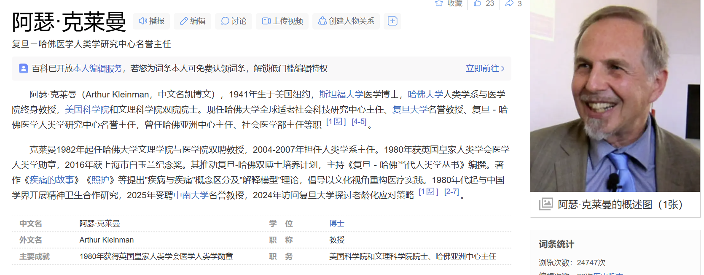
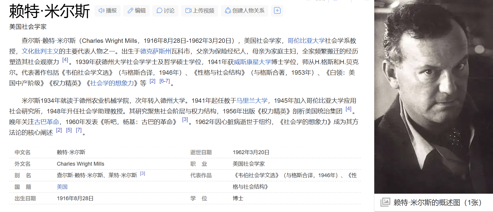

苦难的力量（代序）
布尔迪厄和《世界的苦难》
皮埃尔·布迪厄(Pierre Bourdieu,1930—2002)
1999年英文版面世，《世界的重量：当代社会的社会疾苦》(The Weight of the World: Social Suffering in Contemporary Society）
布迪厄等作者以深切的悲悯之心和细致的关注、耐心的倾听走进这些普通人的生活，并由此而承担了社会学研究的政治使命与道德意涵——展现普通人的社会疾苦并通过社会学的解释，揭示其背后深刻的根源。
个体的苦难就是社会的苦难
通过一个个似乎卑微琐碎的有关痛苦的讲述，研究者以洞若观火般的感受力和想象力，发现个体遭遇与社会结构及其变迁之间的复杂关系，并试图以此超越社会科学研究中微观与宏观之间的二元对立。揭示个人苦难的社会性，是布迪厄等人重要的方法论主张：个人性即社会性，最具个人性的也就是最非个人性的。个体遭遇的困难，看似主观层面的紧张或冲突，但反映的往往是社会世界深层的结构性矛盾。
“社会苦难”或“社会疾苦”(social suffering)在医学人类学重要代表人物凯博文(Arthur Kleirunan) 的研究中也是一个核心概念。他的研究强调痛苦是一种社会经历，并力图打破以往的分隔……那些标准的二分法实际上是理解的障碍，它阻碍我们理解人类痛苦的形式如何可以同时是集体的又是个体的，经历痛苦与创伤的模式如何可能既是地方性的又是全球性的(Kleinman,1997, ix-xxv) 。
米尔斯(C. W. Mills) 所倡导的 “社会学的想象力”(the sociological imagination) ——在具体情境中的个人烦恼和社会结构的公共议题之间建立联系、在微观的经验材料和宏观的社会历史之间进行穿梭的能力。米尔斯强调，个人日常生活世界中无法解决的烦恼是他们无法控制的社会结构变迁造成的。在此意义上，影响每一个人的历史乃是世界的历史（米尔斯，1996 年，31—43页）。
通过对普通人口述历史资料的搜集，通过研究者与被访者面对面的交流，特别是通过与历史的亲历者具有深度和密度的互动，我们就有可能在个体的经历和讲述与宏大的社会历史进程之间建立联系，有可能在个人的“苦难”与社会结构变迁过程之间建立联系，并就此进程获得理解和解释。


苦难的力量
展现不为人知或被人视而不见的“社会痛苦”是社会科学研究的重要任务，但更为重要的还在于通过理解和解释，揭示社会苦难的根源和通常被掩盖的制造苦难的机制。
-
凯博文的研究批判性地揭示了现代化的特定版本建构道德困境的方式以及我们的日常实践如何将社会经历变成了“自然的”或“正常的”，从而模糊了“权力”在社会生活中的重要作用。由于政治的和专业的过程有力地形塑了对社会痛苦类型的反应，这些过程包括权威性的和经过论证的对于集体苦难的认可。
-
因而研究所要面对的更为有趣和重要的问题在于这些痛苦是如何在社会中产生的，对于痛苦的承认作为一种文化过程又是如何获得和抑制的(Kleinman,1997,pp.1-23) 。
……必须着眼于推理从而揭示结构性的原因。社会科学要能够解释社会病患的最明显的征兆，判断和理解导致病患的真实原因，就需使人们意识到被掩盖的各种形式的不幸的社会起源，包括人们最熟悉的和最隐秘的(Bourdieu,1999,pp.627-629) 。他要突破各种各样的屏蔽，这些屏蔽背后掩饰的是社会疾苦。他还要动员人们控诉那些使他们变得不道德和堕落的社会运作机制……
正是在此意义上，社会学成为一种解放的工具，并因此是一种慈悲(generosity）的工具。从布迪厄等对社会苦难的调查、揭示和寻找原因中，可以体验到“社会学的的确确有着除魔去魅的效果”，亦不难感受到一种博大、深邃、浑厚而且充满悲悯的胸怀。
面对日常生活中的种种苦难，农民必须调动全部的勇气、能力和智慧，在其中求得生存。这构成了在苦难中挣扎的历史,而正是在此意义上，这些生活在底层的人们创造和推动了历史
-
但这种种痛苦却是弥散于生命之中的，通常是无从归因的，因而他们对苦难的表述常常不可避免地带有先赋性和宿命论色彩
-
将个体的身体之苦和精神之苦转变为阶级剥削和压迫的痛苦，从而激发阶级仇恨和阶级意识，是在革命政权进入乡村社会之后才发生的
-
……这从一个方面体现了苦难的力量，即将苦难转变为推翻旧社会的革命力量
-
革命的目标在于拯救劳苦大众，革命的过程被声言是解除苦难的过程，但救苦救难的革命也有可能造成与其初衷不同的后果，进而带来新的苦难感受
从农民对苦难的讲述中我们可以感到苦难是有重量的，苦难也是有力量的。底层的表述蕴含着巨大的能量，而关键在于苦难若能进入历史（被讲述和被记录），苦难就有了力量；否则普通人的苦难便一如既往地无足轻重。历史已向我们显示：对苦难的记录可以改写历史甚至重构历史，这是苦难的历史力量；揭示出苦难的社会根源，苦难便不再仅仅是个体的经历和感受，而是具有了社会的力量；去除了先赋性或宿命论的迷障，揭示苦难的社会根源，苦难就会有颠覆的力量、重构的力量、获得解放的力量。
每个人的历史都不应遗忘
民众的历史一直都无足轻重，如同水滴随意消失在历史的长河中……多年来的访谈和研究工作已使我们对此有清楚的认识。
如果我们能够意识到苦难的社会属性和苦难的历史力量，我们就不难理解作为历史主体的人——哪怕他/她是普普通通的“受苦人“，都应该在历史中占有一席之地。人，不可以随意地消失！历史，不可以轻易地被遗忘！
而历史和现实却一再地告诉我们：无论是谁，只要是作为工具而存在都不会、不必留下历史……这样的现实和历史也让我更加确信，每个有可能记下自己的、家庭的、他人的历史的人都应该这样做，因为人不是工具，而是目的。
苦难在普通人的生存中是主要的内容，在苦难中生存也获得一种力量，就此意义而言，每个人的经历都是历史，每个人的苦难都有历史的力量，每个人的历史都弥足珍贵，每个人的历史都不应遗忘。
有意识地忘却历史特别是苦难的历史是统治权力的一种技术，与之相对应的权力技术则是加强幸福的感受和记忆。
在这里需要说明的是， 口述历史研究还是一种探索……正如布迪厄所特别强调的：“如果进行沟通交流，没有什么比同时关注从访问者和被访者之间的互动生发出的理论和实践问题更真实也更切实的方式了”。(Bourdieu, 1999, p.607) 具体而言，在口述历史的尝试中，研究者与读者在面对当事人/亲历者的讲述时，位置应该是同样的；这就是说，读者可以赞同也可以不赞同研究者的分析、解释，而且可以在阅读历史时做出自己的理解和解释。而我们的工作似乎是一种穿针引线，通过口述历史的重构把那些以往发不出声音的人们的声音传达出来。
就此意义而言，底层的历史不是为官方史、精英史拾遗补阙。口述史的任务在于以不同的立场，倾听无声的底层发出的声音，记录普通生命的“苦难”历程，书写从未被书写过的生存与反抗的历史。对于无法书写自己的历史甚至无法发出自己声音的底层人民，我们的口述历史研究并不是要为他们制造一种历史，或者代替他们书写历史，而是力图拓展一方“讲述”的空间，在其中，普通农民能够自主地讲述他们的经历、感受和历史评判。而研究者除了将这“历史”记录下来，还须结合社会理论做出分析、加以表达。就此而言，相对于“从民族国家拯救历史”,我们的努力将致力于从普通人的日常生活中构建历史 (making history from everyday life of common people），即记录和重现“苦难”的历史，使“苦难”经历的讲述成为一种历史证明，为千百万底层人民的生存作见证。
苦难的经历和对这些经历的讲述当然是个人性的，是许多个体的或者由个体组成的群体的生活故事。正是由于个人的苦难往往是社会世界深层的结构性矛盾的产物，或者简单地说，由于“苦难的社会性”，个人讲述才具有了超越个体的意义。这也是个体性的“苦难的讲述“能够成为历史的原因所在。
而以往底层普通人的苦难和他们对苦难的讲述通常被淹没、被遮蔽的原因，就在于历史书写中的权力关系——历史从来就是统治者的历史、精英的历史，而“底层不能发出声音”。
“苦难”的社会属性(social suffering)确立了普通人的日常生活与宏观社会历史之间的有机联系，也表明必须从社会结构和权力关系视角揭示“苦难”的深刻根源。半个多世纪的革命与建设的历史……这样一段文明的历史和文明的转型当然应该也可以从普通人民的生活经历和常识常理(common sense) 来理解和分析。将文明落实为普通人的日常生活，他们卑微琐碎的经历和讲述便具有了非凡的意义，可以成为宏大叙事的有机部分。
有着共同或不同命运的“受苦人”在社会变革过程中无疑是历史巨轮下的铺路沙石，然而被辗压的沙石难道就不应该被关注、被记录、被表述吗？毕竟那是千百万人的生活和命运，而他们是历史的真正创造者和推动者。将文明与普通人的日常生活实践联系起来，“历史是人民创造的＂这一命题才真正有意义。